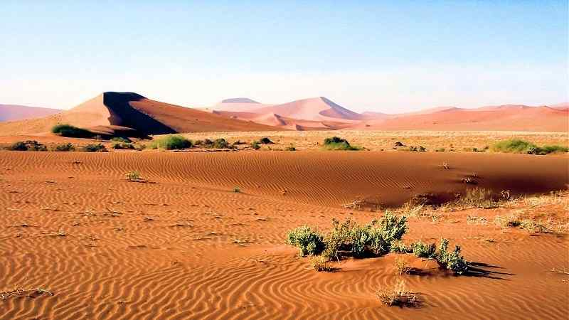
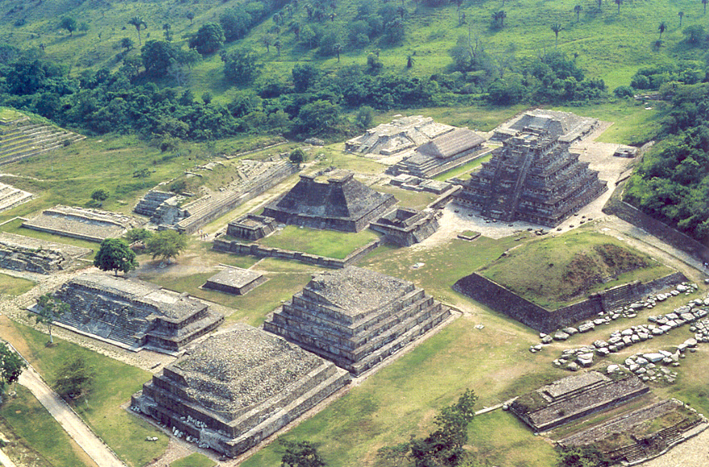
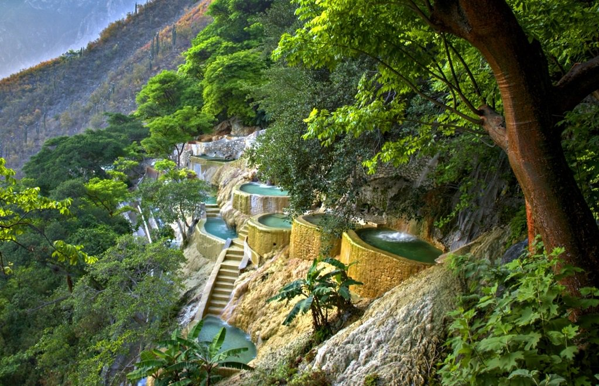
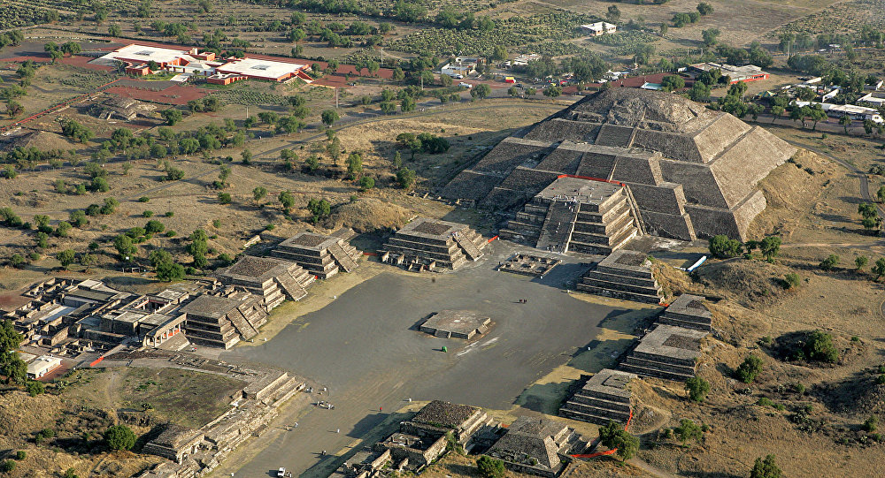
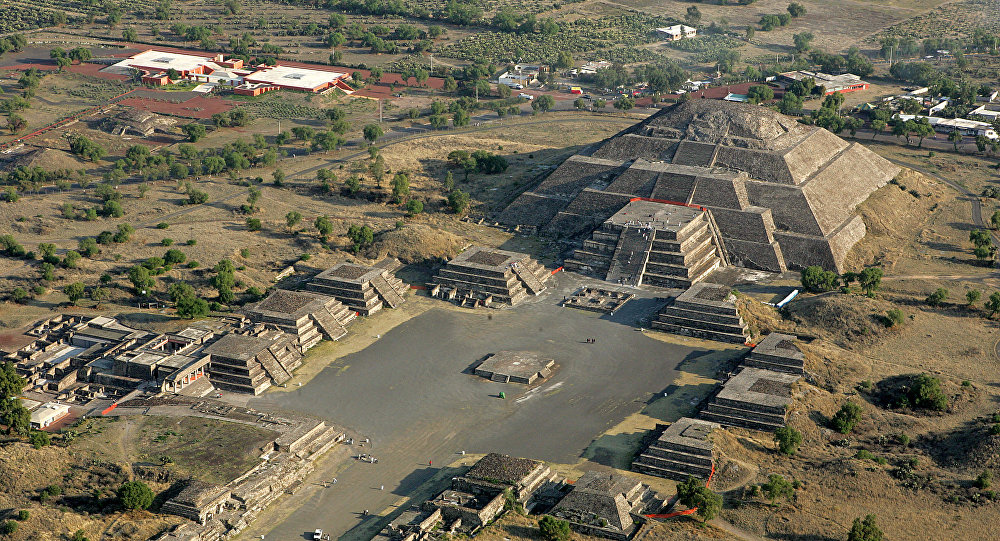
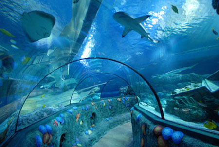
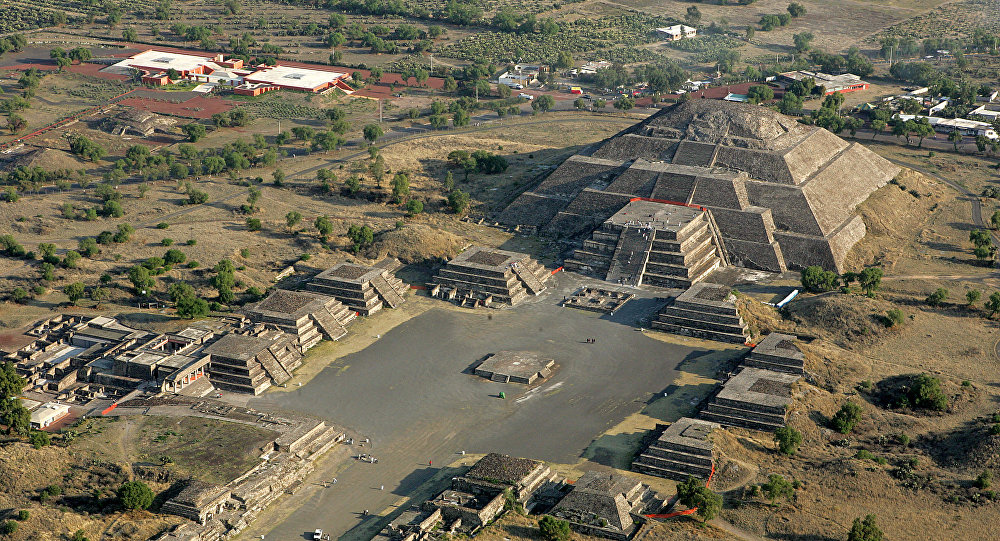
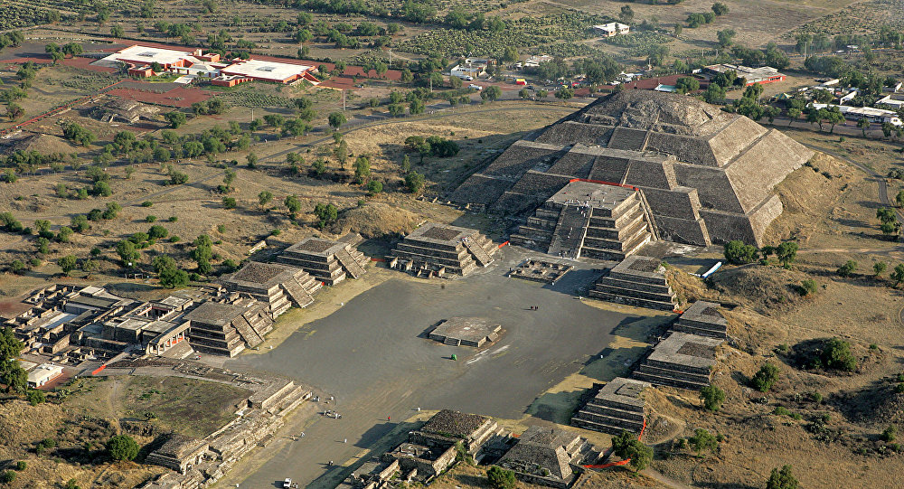

 


 

El Tajín es una zona arqueológica precolombina cerca de la ciudad de Papantla, Veracruz, México. Se cree que la ciudad de Tajín que fue la capital del imperio Totonaca y llegó a su apogeo en la transición al Posclásico, conocida también como Período Epiclásico mesoamericano, entre los años 800 y 1150; el Tajín cuenta con varios campos de juego de pelota y basamentos piramidales. La construcción de edificios ceremoniales del Tajín probablemente se inició en el siglo I. En el Período Clásico mesoamericano temprano el Tajín mostró influencia de Teotihuacan tal y como se puede observar en el urbanismo, la arquitectura, la pintura, la escultura y la cerámica;4mientras que en el Posclásico mostró influencia tolteca. Tajín significa Ciudad del trueno en el idioma totonaco.2 Se piensa que Tajín también fue el nombre de algún dios totonaco, si bien tal como sucede con muchos sitios arqueológicos es poco probable que ese fuera su nombre en aquel tiempo.